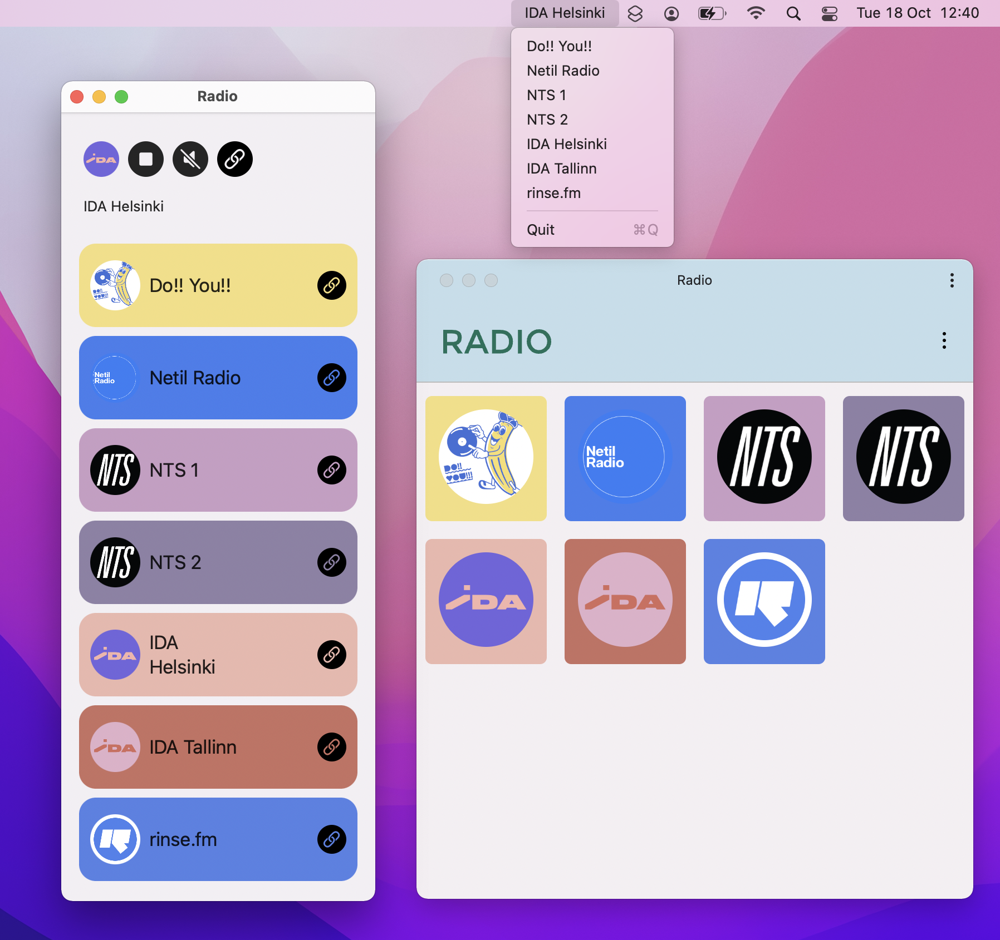

Home / Radio
A simple net radio system.
Client implementations read a users station list from a JSON feed, this can be remote, or imported from a local file:
{
"stations": [
{
"title": "Do!! You!!",
"website": "https://doyou.world",
"streamUrl": "https://doyouworld.out.airtime.pro/doyouworld_a",
"logoUrl": "https://orllewin.uk/rad/rad_doyou_256.png",
"colour": "#f4de7f"
},
{
"title": "Netil Radio",
"website": "https://www.netilradio.com/",
"streamUrl": "https://netilradio.out.airtime.pro/netilradio_a",
"logoUrl": "https://orllewin.uk/rad/netil_radio_256.png",
"colour": "#407eee"
},
{
"title": "NTS 1",
"website": "https://www.nts.live/",
"streamUrl": "https://stream-relay-geo.ntslive.net/stream",
"logoUrl": "https://orllewin.uk/rad/rad_nts_256.png",
"colour": "#c99dc4"
},
{
"title": "NTS 2",
"website": "https://www.nts.live/",
"streamUrl": "https://stream-relay-geo.ntslive.net/stream2",
"logoUrl": "https://orllewin.uk/rad/rad_nts_256.png",
"colour": "#8E81A6"
}
]
}A client displays the station list, eg. MacOS version and the installed Chrome PWA:
